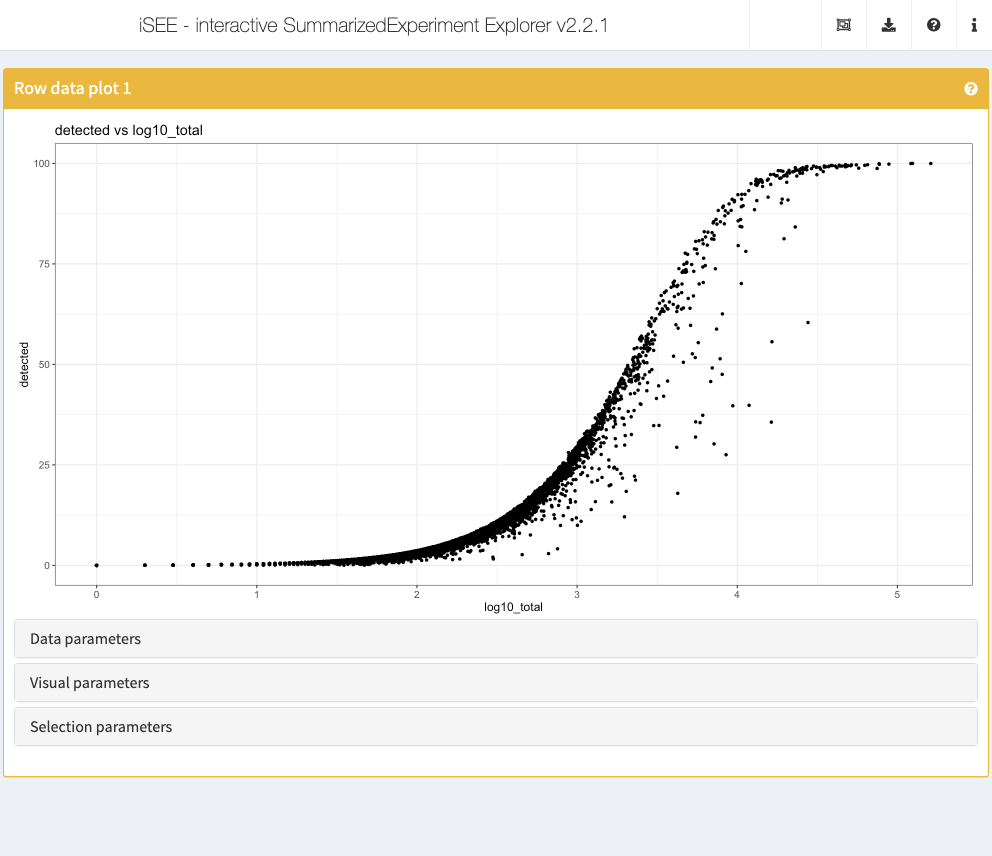
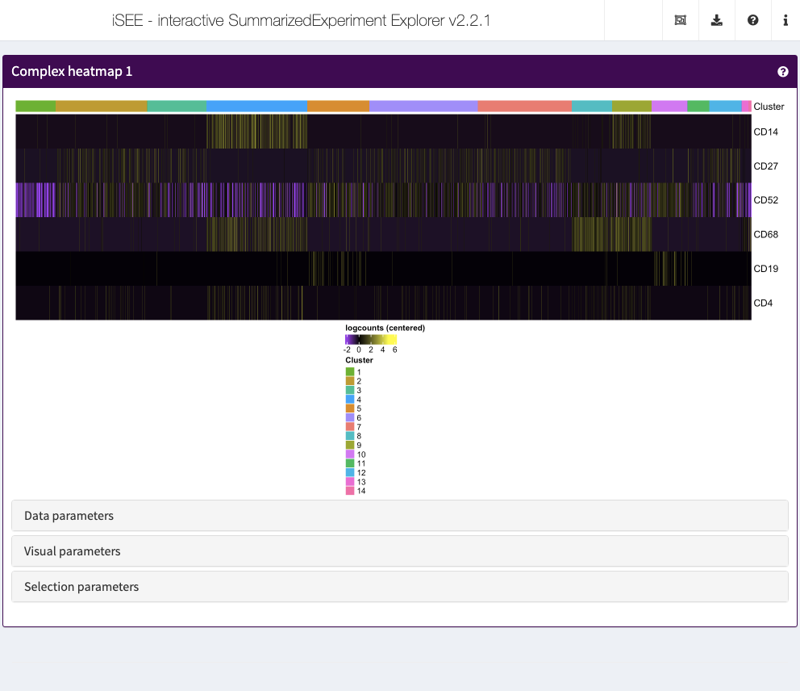
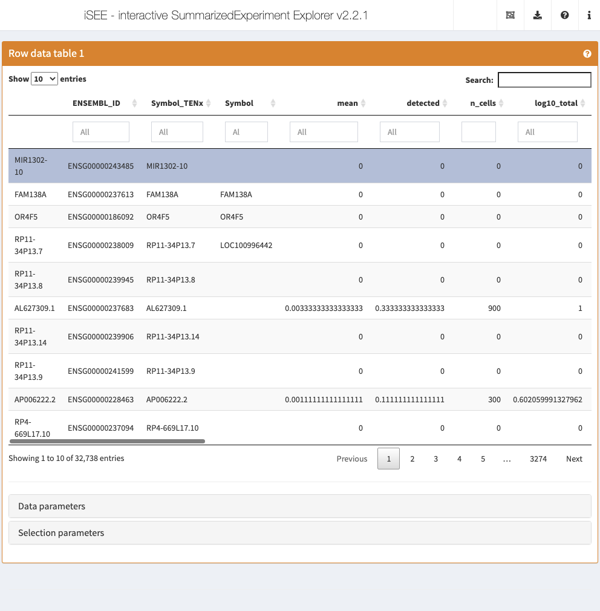

Overview of the iSEE package
Kevin Rue-Albrecht, Charlotte Soneson, Federico Marini, and Aaron Lun
December 15, 2020
Source:vignettes/overview.Rmd
overview.RmdIntroduction
This vignette provides an overview of the graphical interface of iSEE applications. To follow along, make sure that you launch the default iSEE instance as described in the next code block at the start of the following section.
Note that in the default configuration, the panels do not look exactly like the ones shown in the screenshots that you will see below. For example, data points are not immediately colored, and the default annotation variables displayed by each panel may differ. The hands-on recipes workshop of this workshop will demonstrate how to modify the content of the panels, and how they are displayed.
Note that for simplicity, we typically refer to a SummarizedExperiment in this workshop; however, iSEE works seamlessly for objects of any class extending SummarizedExperiment as well (e.g., SingleCellExperiment, DESeqDataSet). That said, some types of panels – such as the Reduced dimension plot – are only available for objects that contain a reducedDim slot (in particular, SingleCellExperiment objects); the basic SummarizedExperiment class does not contain this slot. In this workshop, we refer to the rows of the SummarizedExperiment object as ‘features’ (these can be genes, transcripts, genomic regions, etc) and to the columns as ‘samples’ (which, in our example data set, are single cells).
The default iSEE app
Using the demonstration data set, we can launch an iSEE instance for exploring this data set using the iSEE() function without any further argument. This will produce an app using the default configuration; that is, the app instance will include one panel of each built-in class for which the relevant information is available in the SummarizedExperiment object.
library(iSEE)
library(iSEEWorkshopEuroBioc2020)
sce <- load_demo_sce("pbmc3k")
app <- iSEE(sce)
shiny::runApp(app)
The main argument to the iSEE() function is a SummarizedExperiment object, or an object of any class extending SummarizedExperiment (such as SingleCellExperiment, in this case). No other restrictions are made on the type of data stored in the object, and iSEE can be used for interactive visualization of many different types of data. It is also worth noting that for various types of data, Bioconductor packages provides functionality for directly importing quantifications generated by external software packages into a SummarizedExperiment object. For example, the DropletUtils package can read quantifications from the 10x Genomics CellRanger pipeline for single-cell RNA-seq data, and the tximeta package can be used to read data from transcript quantification pipelines into a SummarizedExperiment object.
While we will not make explicit use of it in this workshop, we note that it is also possible to call iSEE() without providing a SummarizedExperiment object. In that case, the user will be prompted to upload such an object, serialized into a .rds file. It is also possible to import a specification of the initial panel setup.
app <- iSEE()
shiny::runApp(app)
The built-in panel types
The panel hierarchy
The iSEE user interface (UI) consists of a number of panels, each displaying the data provided in the SummarizedExperiment from a specific perspective. There are 8 standard panel types; 6 plot panels and 2 table panels, all showcased in the figure shown at the start of the previous section. In the default configuration, one panel of each type is included when launching the iSEE user interface. However, users are free to rearrange, resize, remove or add panels freely, as demonstrated in the separate vignette of workshop recipes. We provide a brief overview of each panel type in the following subsections.
In addition to the 8 standard panel types included in iSEE, users can create custom panels (both plots and tables). Moreover, the iSEEu (iSEE universe) package contains additional panel types. The creation and configuration of custom panels is also demonstrated in a series of workshop advanced recipes.
Specifically, iSEE panels are implemented as a hierarchy of S4 classes. Only concrete classes (orange) may be instantiated as panels in the user interface; while virtual classes (grey) provide functionality shared by families of panels (e.g., sample-oriented plots, feature-oriented tables).

Reduced dimension plot
The reduced dimension plot can display any reduced dimension representation that is present in the reducedDim slot of the SingleCellExperiment object.
Note that this slot is not defined for the base SummarizedExperiment class, in which case the user interface does not allow the inclusion of panels of this type.

Column data plot
The column data plot can display one or two of the provided column annotations (from the colData slot). Depending on the class of the selected annotations, the panel shows either a scatter plot, a violin plot, or a Hinton diagram (Hinton and Shallice 1991; Bremner, Gotts, and Denham 1994).

Row data plot
Analogous to the column data plot above, the row data plot displays one or two of the provided row annotations (from the rowData slot). Depending on the class of the selected annotations, the panel displays either a scatter plot, a violin plot, or a Hinton plot.

Complex heatmap
The complex heatmap panel displays, for any assay, the observed values for a subset of the features across the samples.

Feature assay plot
The feature assay plot displays the observed values for one feature across the samples. It is also possible to plot the observed values for two features, in a scatter plot.

Sample assay plot
Analogous to the Feature assay plot above, the Sample assay plot shows the observed values for all features, for one of the samples. It is also possible to plot the observed values for two samples, in a scatter plot.

Row data table
The row data table displays all information provided in the rowData slot of the SummarizedExperiment object, leveraging the interactivity provided by the DT package.

Column data table
Analogous to the Row data table above, the column data table displays all information provided in the colData slot of the SummarizedExperiment object.

Collapsible boxes with display controls
Data parameters
Each plot panel type has a Data parameters collapsible box. This box has different content for each panel type, but in all cases it lets the user control the data that is displayed in the plot.

Visual parameters
In contrast to the Data parameters collapsible box that lets users control what is displayed in the plot, the Visual parameters box lets users control how the information is displayed.
This collapsible box contains the controls to change the size, shape, opacity, and color of the points, to facet the plot by any available categorical annotation, to subsample points for increased speed of plot rendering, and to control how legends are displayed.

Selection parameters
The Selection parameters collapsible box provides controls to transfer selections of points (features or samples) between panels.
We demonstrate examples of point transmission in the separate vignette of workshop recipes

Additional controls
At the top-right corner of the iSEE application, users can find additional controls for reproducibility, configuration, and help.
| Organization |  |
Organize panels Examine panel chart |
| Export |  |
Download panel output Extract R code Display panel settings |
| Documentation |  |
Quick tour Open the vignette |
| Additional info |  |
About this session About iSEE |
Organize panels
As mentioned above, the default behaviour of the iSEE() function is to launch an instance of the user interface that displays one panel of each of the standard types (provided the underlying data is available, e.g. for reduced dimension plots the reducedDim slot is required). However, in some cases it is desirable to have multiple panels of the same type, and/or exclude some panel types.
In order to accommodate such situations, users can add, remove, change the order of and resize all panels via the Organization menu in the top-right corner.
Clicking in the selectize box listing all current panels will present you with a drop-down menu from which you can choose additional panels to add. Similarly, panels can be removed by clicking on the icon associated with the panel name.
Each panel can be individually resized by changing the width and height. Note that the total width of a row in the interface is 12 units. When the width of a panel is greater than the space available, the panel is moved to a new row.

Linking panels and transmitting point selections
When exploring data, it is often useful to be able to select a subset of points and investigate different aspects of their characteristic features. In iSEE, this can be achieved by selecting points in one panel, and transmitting this selection to one or more other panels.
The brushing and point selection can also be programmatically preconfigured.
The button Examine panel chart display a graph that reports any active point transmission between panels in the app.

Download panel output
The Download panel output button opens a modal window listing all the current panels in the app. Checkboxes allow users to select any subset of panels to export. Finally, clicking the Download button in that modal will prompt the app to save plots to PDF files, tables to CSV files, package the set of files in a ZIP archive that users can download and save on their computer.

Extract R code
The fact that data exploration is done interactively is no reason to forego reproducibility! To this end, iSEE lets you export the exact R code used to create each of the currently visible plots.
Importantly, the script reported by iSEE contains a short preamble needed to set up variable names that are used in individual panels, including active brushes used to transfer point selections.

Display panel settings
It can take a great amount of time to achieve a satisfactory panel configuration. To avoid the need to manually organize the panels each time the app is opened, iSEE offers the possibility to export code that can be reused later to programmatically specify how the app is initialized, as well as to inspect and export the current panel settings for future use.

Quick tour
One important aspect of visualization is the ability to share your insights with others. A powerful way of easily getting people unfamiliar with your data up to speed is to provide a walkthrough of the interface and the different types of plots that are displayed. With iSEE, this can be achieved using tours. To configure a tour, you need to create a text file with two columns; named element and intro, with the former describing the UI element to highlight in each step, and the latter providing the descriptive text that will be displayed.
Clicking the Quick tour button launches an interactive tour of the interface using the rintrojs package, highlighting specific elements of the user interface, labeled with information and instructions guiding users through panels and tasks specific to individual apps.

You can see a live example of a more complex tour in action, visit https://marionilab.cruk.cam.ac.uk/iSEE_pbmc4k/. The code used to create this app and the associated tour is available from https://github.com/iSEE/iSEE2018/tree/master/tours/pbmc4k.
Open the vignette
The user interface navigation bar also includes this button to open the introductory vignette to iSEE in your we browser.
Depending on the version of iSEE that you are using, this will adaptively lead you to a locally built vignette present on your computer, or the release or the devel version of the Bioconductor package landing page, e.g. <Bioconductor 3.13>.
Session information
This button displays the output of sessionInfo(), which is a useful piece of information to report when reporting an issue with an app.

About iSEE
This button provides information about the authors of iSEE, as well as citation information.
If you use this package, please use the following citation information:
Rue-Albrecht K, Marini F, Soneson C, Lun ATL (2018). “iSEE: Interactive SummarizedExperiment Explorer.” F1000Research, 7, 741. doi: 10.12688/f1000research.14966.1 (URL: https://doi.org/10.12688/f1000research.14966.1).
A BibTeX entry for LaTeX users is:
@Article{,
title = {iSEE: Interactive SummarizedExperiment Explorer},
author = {Kevin Rue-Albrecht and Federico Marini and Charlotte Soneson and Aaron T. L. Lun},
publisher = {F1000 Research, Ltd.},
journal = {F1000Research},
year = {2018},
month = {Jun},
volume = {7},
pages = {741},
doi = {10.12688/f1000research.14966.1},
}Additional resources
A lot of materials have been developed, from the first use of iSEE to contributions of new panel classes in separate downstream packages.
- The bookdown book on Extending iSEE: https://isee.github.io/iSEE-book/
- Bioconductor landing page: https://bioconductor.org/packages/iSEE/
- Publication (F1000Research, 2018): https://f1000research.com/articles/7-741/v1
- Deployed examples: https://marionilab.cruk.cam.ac.uk/, code at https://github.com/iSEE/iSEE2018
- Further deployments in the https://github.com/iSEE/iSEE_instances repo
- iSEE in production: http://www.teichlab.org/singlecell-treg
- Custom panel examples: https://github.com/iSEE/iSEE_custom
- Development version (bug reports etc): https://github.com/iSEE/iSEE
References
Bremner, Frederick J, Stephen J Gotts, and Dina L Denham. 1994. “Hinton Diagrams: Viewing Connection Strengths in Neural Networks.” Behav. Res. Methods Instrum. Comput. 26 (2): 215–18.
Hinton, Geoffrey E, and Tim Shallice. 1991. “Lesioning an Attractor Network: Investigations of Acquired Dyslexia.” Psychological Review 98 (1): 74–95.